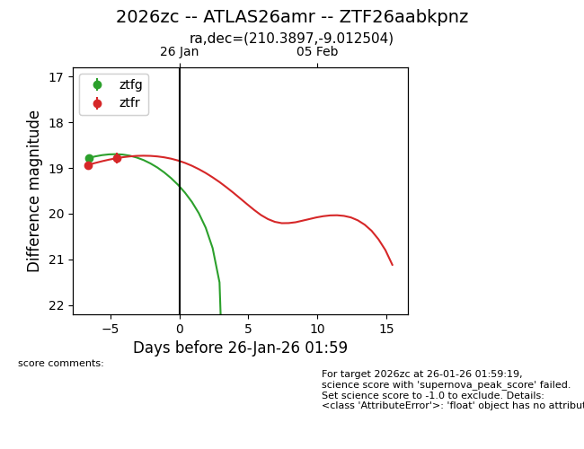
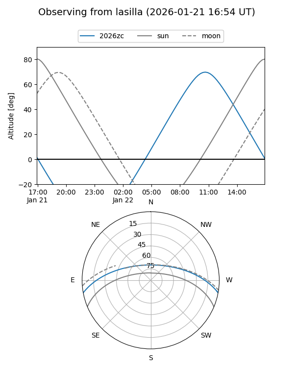
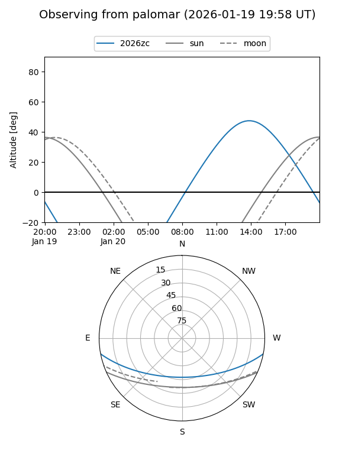
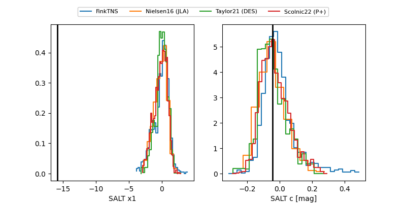

2026zc
Target 2026zc at 2026-01-28 00:06
Aliases and brokers:
FINK: link
Lasair: link
ALeRCE: link
TNS: link
YSE: link
alt names
ZTF26aabkpnz (ztf,fink_ztf)
2026zc (tns,yse)
ATLAS26amr (atlas)
Coordinates:
equatorial (ra, dec) = 210.3897,-9.01250
equatorial (HMS+DMS) = 14:01:33.52,-09:00:45.02
galactic (l, b) = (330.5398,+50.06279)
Flags:
Photometry:
last ztfg=18.78, ztfr=18.79
1 ztfg, 2 ztfr detections
Lightcurve

Visibility


Additional plots
